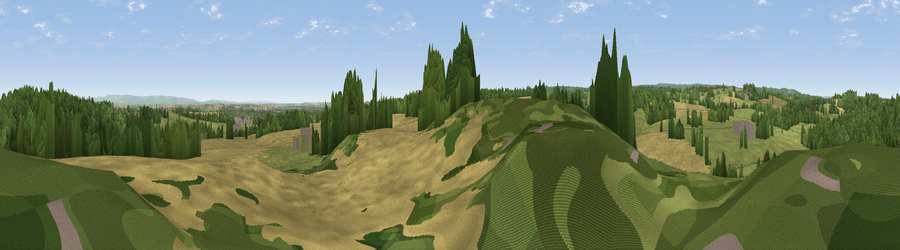

Viewpoint near Ripon
#19476 in England · top 41% of its area beats it · near RiponThe view, rendered

A 360° render of this exact spot computed from the terrain model, tree cover and land cover — summer colours, afternoon light, calibrated against photographs of famous viewpoints. Real trees, hedges and buildings will differ in detail.
The panorama
Grey silhouette: terrain skyline in each direction (720 bearings, Earth curvature and refraction included). Dashed green: skyline with trees (+15 m) and buildings (+8 m) as obstacles. Blue strip: how far the ground is visible on each bearing.
Where the view opens
Wedge length = distance to the farthest visible ground on that bearing (vegetation-aware). Rings at 10, 25 and 50 km.
What fills the view
39% grassland · 31% cropland · 29% woodland · 1% built-up
Angular shares of the visible panorama (visual magnitude), not map area. Landscape diversity 0.50 (0–1 Shannon).
Key numbers
More beautiful places nearby
The staircase of upgrades: each row has a higher view potential than everything closer. Driving times are estimates from straight-line distance, calibrated against real road routing — check an actual route before setting out.
| Place | Direction | Drive | Score |
|---|---|---|---|
| Viewpoint near Kirkby Malzeard | WNW · 2 km | ~5 min | 60.9 |
| How Hill | S · 5 km | ~12 min | 72.9 |
| Viewpoint near Grewelthorpe | NW · 7 km | ~14 min | 73.9 |
| Viewpoint near Bewerley | WSW · 17 km | ~29 min | 76.8 |
| Viewpoint near East Witton | NW · 18 km | ~32 min | 77.8 |
| Viewpoint near Kirby Knowle | NE · 24 km | ~39 min | 80.5 |
| Viewpoint near Thirlby | ENE · 26 km | ~42 min | 81.5 |
| Beacon Hill | NE · 33 km | ~51 min | 84.7 |
54.14604, -1.58395 · source: screening · position refined by local search. Computed location — check access rights before visiting.